AI Academy · Level 3 · Grade 8 · Week 15 · Student lesson
Source Quality
Learn to understand, design, build, test and explain AI systems responsibly.
Project: Verified Study Buddy
Before you start
AI-2 Week 29: identify the exact record that supports a claim.
Plan time to read, investigate and explain. Keep predictions separate from observations.
Student lesson · 1 of 17
Your mission
Your learning target
I can explain the mechanism and terminology of conflicting and time-sensitive sources.
I can apply the stated procedure to a new case with a traceable result.
I can identify an assumption or limitation and design a revealing follow-up.
Remember before reading
Close your notes first. A rough first answer helps us choose the right starting point; it is not a score for your ability.
Without opening the old lesson, explain one key idea from Hallucination Failure Types. Give an example and a mistake that the idea helps you avoid.
Without opening the old lesson, explain one key idea from Speech and Audio Systems. Give an example and a mistake that the idea helps you avoid.
Without opening the old lesson, explain one key idea from Prompt Evaluation. Give an example and a mistake that the idea helps you avoid.
After trying, check the relevant lesson or ask your teacher. Change the part of your explanation that the evidence shows was wrong.
Week 15: Source Quality
Authority, relevance, currency, and independence determine source usefulness.
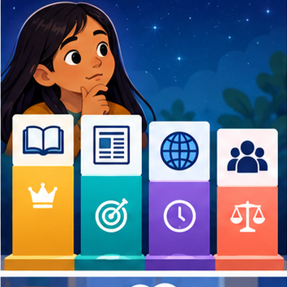
CREATOR MISSION
Rank four sources for a low-risk school research question.
Creator name and date:
Readiness for the connected explanation
Recall Abstention and clarification. Explain why a recorded result needs its input conditions and evidence source before it can support a claim.
This week’s end goal
By the end, I can apply source authority and effective dates rather than choosing the newest-looking upload.
Student lesson · 2 of 17
Notice the evidence
PICTURE STORY
Notice → Predict → Explain
Begin with visible evidence. Do not explain more than the picture and information support.
MYSTERY
The learners must use source quality to solve a problem. What information do they have? What decision or calculation do they make? What would count as evidence that it worked?
Three observations (what you can point to):
My prediction and the clue supporting it:
A closer explanation
Changing facts require a stated time and source-version policy. Current-looking records can conflict without enough evidence to choose between them.
Begin by writing the question the procedure is intended to answer. Identify the information already supplied, the information it will produce and the information still missing. These are constructed classroom examples; they do not require live accounts, private records or an external service. Do not treat a plausible explanation as a measured outcome.
Student lesson · 3 of 17
See how it works
VISUAL MECHANISM
Input → Process → Output
Trace the information. At each stage, ask what changed and how you could test it.
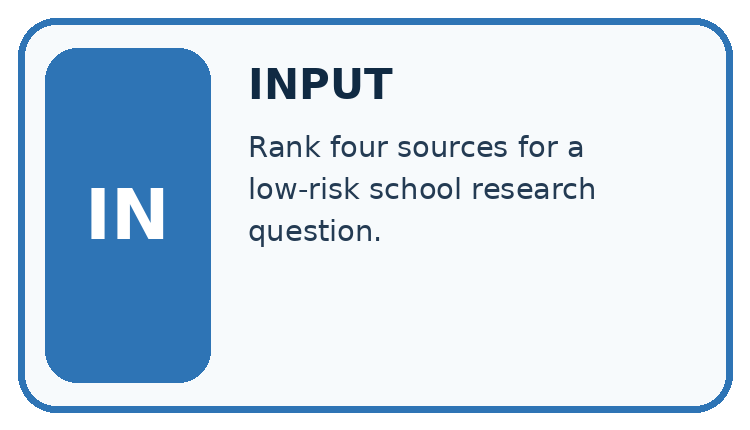
↓
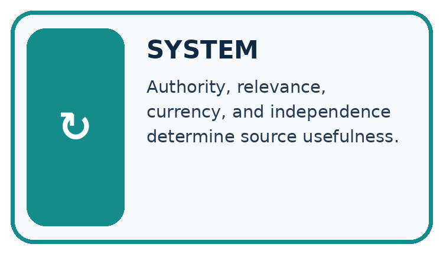
↓
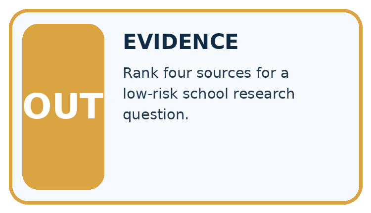
Which stage could fail even when the other two are correct? Explain:
A closer explanation
For this toy task a signed amendment supersedes the referenced original from its effective time. Keep both records. A newer timestamp alone has no authority unless the policy grants it.
Conflicting and time-sensitive sources — evidence trace
Before applying the procedure, write its units, denominator or decision boundary where relevant. A partner should be able to repeat each step using the same inputs. If a required input is absent or violates the stated contract, record that condition explicitly instead of quietly replacing it with a convenient value.
Connect the picture and the explanation
Point to the input, the deciding step and the result in this week’s visual. Explain the same step in ordinary words. A picture helps when you can say what each part represents.
Student lesson · 4 of 17
Compare the cases
CASE GALLERY
Four Tests, Four Kinds of Evidence
A system is not understood until it survives more than one comfortable example.


NORMAL CASE: predict and name evidence. BOUNDARY CASE: predict and name evidence.


MISSING INFORMATION: predict and name evidence. TRANSFER CASE: predict and name evidence.
Which case is most likely to reveal a hidden assumption? Why?
Change one thing in the pictured case
Change: A signed amendment C explicitly revokes B effective day 12 and restores Hall 1.
Prediction: Day 9 stays Hall 3; day 13 becomes Hall 1.
Reason: The new authoritative change applies from its stated effective date, not retroactively.
Student lesson · 5 of 17
Words that unlock the idea
VOCABULARY LAB
Words You Can Use to Reason
A definition matters when you can recognize the idea, use it, and contrast it with a near-miss.
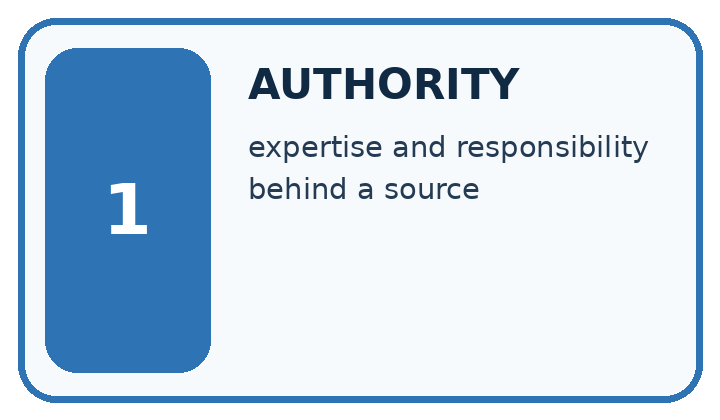
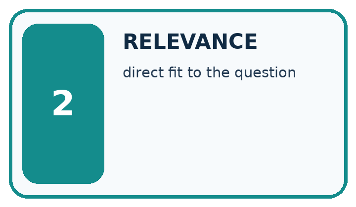
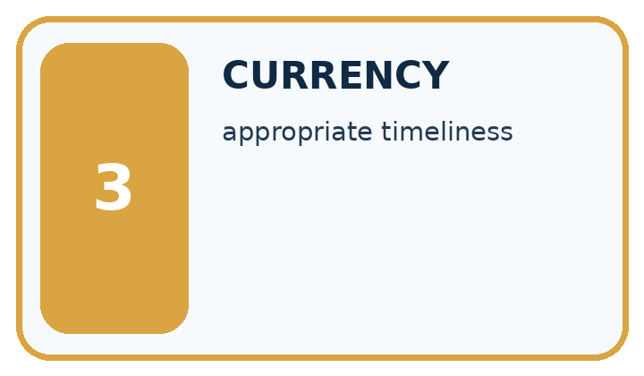
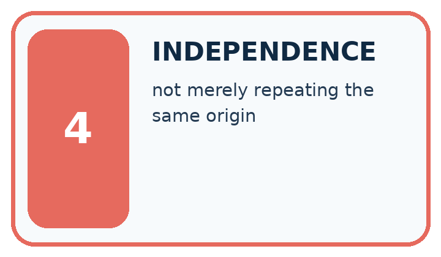
| Word | My own example | Not this / boundary |
|---|---|---|
| authority | A person or source with relevant responsibility or evidence for a particular decision or claim. | |
| relevance | How directly information helps answer the stated question or perform the task. | |
| currency | How up to date information is for the task and time concerned. | |
| independence | Separation from influences relevant to a judgment, such as keeping final test cases out of model selection. |
Words used in the closer explanation
| Word | Meaning |
|---|---|
| Effective time | When a declared change begins to apply |
| Supersession | A documented replacement relationship between versions |
| Temporal scope | The time conditions a claim concerns |
Student lesson · 6 of 17
Follow a worked example
WORKED EVIDENCE
Reason Step by Step
Predict first. Then check each step. A correct answer without visible reasoning is incomplete evidence.
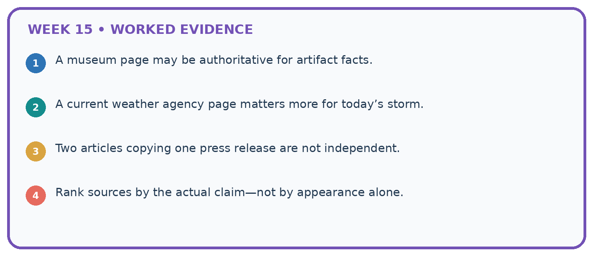
1. A museum page may be authoritative for artifact facts.
2. A current weather agency page matters more for today’s storm.
3. Two articles copying one press release are not independent.
4. Rank sources by the actual claim—not by appearance alone.
Recalculate, retrace, or restate the reasoning in your own representation:
CHECK Did the evidence answer the exact question? Did the total, path, or source record stay consistent?
A closer explanation
Notice N says room A from Monday. Signed amendment M references N and changes to B effective Wednesday. Query asks Tuesday, then Thursday.
Tuesday uses A; Thursday uses B. The amendment effective time, not merely upload order, determines the change.
Compare the intermediate evidence with the final statement. Explain why each number or decision follows from the stated inputs. The conclusion belongs to this scenario and procedure; changing the inputs, evaluation population or authority can change what it establishes. Retain the raw record so a later revision can be compared honestly.
Learn from the worked case
Cover the result before checking it. Say what is given, choose the procedure, and follow one step at a time. Then uncover the result and explain your first mismatch. Ask why a step is allowed, not only what number it produces.
A pictorial worked case: Source Quality
A fictional Study Buddy answers which room a club is authorised to use.
The facts we will use
Signed notice A: Hall 1 from day 1. Signed amendment B references A and changes to Hall 3 effective day 8.
An old copy of A is reuploaded on day 10. B remains the authoritative amendment. Queries concern day 6 and day 9.
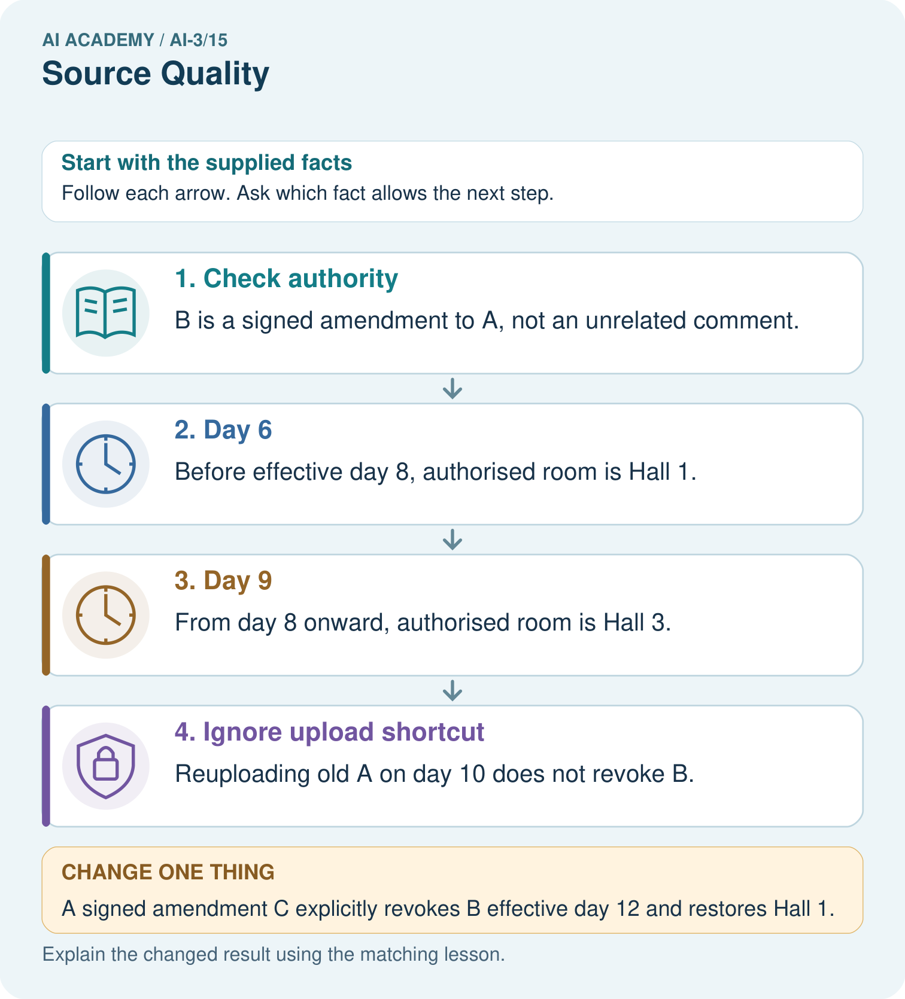
Read the picture one step at a time
Why this result follows
A source’s upload time and the time its rule takes effect answer different questions. Preserve version relationships and the query’s intended date. The current authoritative chain gives a consistent answer to both queries. A later filename or timestamp alone cannot establish that an old record supersedes a signed amendment.
What this example does not establish
Authority is declared in this fictional case; real conflicting sources may require the responsible owner’s review.
Read the labelled picture: Which source fields must be checked before answering day 9?
Change one thing: A signed amendment C explicitly revokes B effective day 12 and restores Hall 1. Predict the result before checking the explanation. What remains the same?
Student lesson · 7 of 17
Find and repair a mistake
ERROR DETECTIVE
Compare → Diagnose → Repair
Do not patch the answer. Find the earliest unsupported assumption, wrong step, or weak evidence.
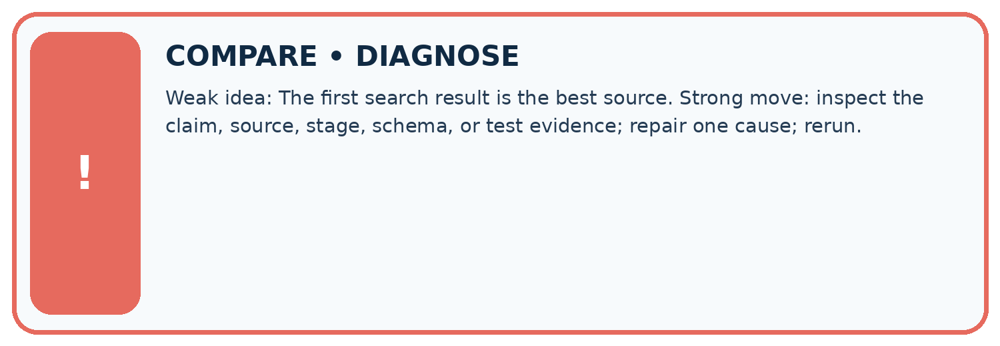
| Evidence record | Expected | Actual | Likely cause / next test |
|---|---|---|---|
| normal case | works | ||
| boundary case | stated rule | ||
| missing input | safe response | ||
| fresh transfer | generalizes |
Repair one cause. Why is this repair better than changing several things?
A closer explanation
Complete the supported workbook tasks before attempting W4 independently. Record any hints or help used. After feedback, use the teacher's fresh retry rather than copying the earlier answer. For a project, select a relevant new case, predict the outcome from the declared rule and preserve the result alongside any revision.
Student lesson · 8 of 17
Practise together
LOGIC STUDIO
Specify Before You Run
Prompts, schemas, retrieval, tool calls, and code are inspectable parts of one AI product.

SET task, audience, constraints, output_schema LOAD approved_context or retrieval_result CALL model or allowed_tool VALIDATE fields, claims, citations, and safety IF evidence missing: ask, retrieve, or abstain RETURN useful output + source trail + limitations
Trace one input. Which line changes the state or chooses a path?
A closer explanation
An unspecified authority or effective-time rule leaves a conflict unresolved; do not invent precedence.
A useful check asks what would make the reasoning fail. Distinguish a failure to execute the declared procedure from a weakness in the procedure itself. The first may require a correction; the second requires an explicitly revised method and new evidence. Preserve unsuccessful cases so an improved result cannot hide the original problem.
Practise with less help: Trace the worked case
Use workbook W2 for the connected example “Conflicting and time-sensitive sources”. First fill the input and rule boxes. Try the middle steps before asking for a hint. After a hint, try the next step yourself.
| Plan | Do | Check |
|---|---|---|
| What is given? Which rule or procedure applies? | Record each intermediate step. | Does the result follow? What remains unknown? |
Explain your trace to a partner. Your partner points to one step to check. Swap roles on the next case. Each person writes their own explanation.
Check your reasoning
Use the worked case for Conflicting and time-sensitive sources. Proposed explanation: “The worked result establishes every future case”. Decide whether this explanation is supported. Point to the step or supplied fact that decides; explain your repair if needed.
Answer on your own before discussion. If you are unsure, say which step you need help with.
Explain the picture
Which source fields must be checked before answering day 9?
This is supported practice. Keep the separately named independent case for an attempt before feedback.
Student lesson · 9 of 17
Run the investigation
EVIDENCE LAB
Predict → Test → Record → Explain
Keep expected and actual results separate. Surprises are useful data when recorded honestly.
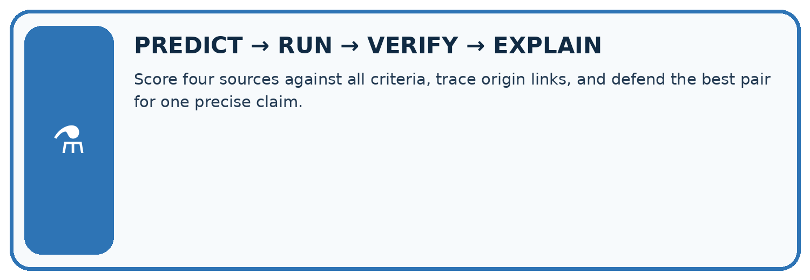
Score four sources against all criteria, trace origin links, and defend the best pair for one precise claim.
| Test / input | Prediction | Actual | Evidence / calculation | Change or keep? |
|---|---|---|---|---|
| normal | ||||
| boundary | ||||
| missing | ||||
| fresh transfer |
What did the hardest test teach you that the normal test did not?
Plan → try → check
Before trying: what do I expect, and why? While trying: which step could first go wrong? Afterwards: what did I actually observe, and what should change? Keep “not run” if you only traced the procedure.
Student lesson · 10 of 17
Build your understanding
MASTERY
From Knowing the Word to Owning the Idea
Move upward only when you can produce evidence without copying the worked example.

1 • NAME: Define the concept without repeating the textbook.
2 • TRACE: Show the information, state, branch, calculation, or evidence path.
3 • APPLY: Solve a different example independently.
4 • CHALLENGE: Find a boundary case, counterexample, or unfair outcome.
5 • EXPLAIN LIMITS: Say when the result should not be trusted or used alone.
My strongest evidence of independent understanding:
Student lesson · 11 of 17
Connect your project
CUMULATIVE PROJECT
Verified Study Buddy
Every week adds one inspectable piece. The system must show how it reached a result.
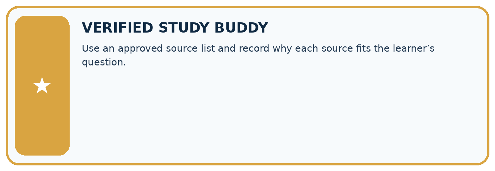
THIS WEEK’S CHECKPOINT Use an approved source list and record why each source fits the learner’s question.
SYSTEM MAP Learner need → prompt/schema → approved sources/retrieval → model/tool → structured answer → verification → human decision
What will you add, change, or verify in the project this week?
What should remain under human control?
RESPONSIBLE DESIGN Collect only necessary information. Show uncertainty and limits. Never confuse fluent output with verified truth.
Evidence for your project
Store Study Buddy source identity, version, authority and effective date, especially for schedules or changing classroom rules.
Student lesson · 12 of 17
Show what you know
INDEPENDENT MASTERY PROOF
Explain • Transfer • Test • Defend
Complete this page without copying the worked example. Your reasoning matters more than decoration.
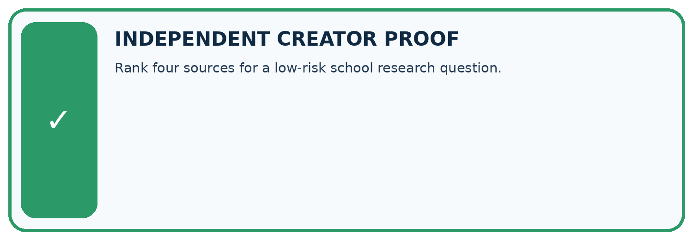
CHALLENGE Rank four sources for a low-risk school research question.
1. My fresh example, trace, calculation, or design:
2. My evidence that it works (include a boundary or missing-data case):
3. One limitation, fairness concern, or situation needing human review:
SELF-CHECK □ I explained the mechanism □ I used evidence □ I tested a fresh case □ I named a limitation □ I can answer ‘why?’
Student lesson · 13 of 17
Study a complete case
Week 15 Worked case
Use the supplied details to practise the weekly concept before attempting the independent question. This case extends the illustrated lesson.
The situation
An original experiment report and an anonymous unlinked summary describe a method.
The question
Where should verification begin?
Worked explanation
Read the original method, scope and limitations. Original does not mean infallible; summaries may omit conditions.
Explain it in your own words
Which detail supports the answer, and why does it matter?
Trace the supplied case visually
Follow a summary back to its evidence
| Evidence or stage | Value or result |
|---|---|
| Summary | Identify its source |
| Original report | Read method and scope |
| Limitations | Keep conditions attached |
| Conclusion | State what evidence supports |
An original experiment report and an anonymous unlinked summary describe a method.
Where should verification begin?
Read the original method, scope and limitations. Original does not mean infallible; summaries may omit conditions.
Student lesson · 14 of 17
Try a new case independently
Independent case: Apply a new case independently
Original allows capacity 14. Signed amendment lowers it to 9 effective day 5. Query concerns days 4 and 6. Trace both and preserve versions.
Attempt this case before feedback. Record any help. Earlier examples below are further practice; a case already practised with feedback cannot establish fresh transfer.
Week 15 Independent application
Close the worked explanation. Apply the idea to this different question without copying.
For a school's current opening time, compare an undated repost with a dated notice issued by the school. Which is the stronger starting source, and what must still be checked?
My answer, with a trace, calculation or supporting evidence
Create and test
Change one relevant detail. Predict the result before testing. Include a boundary or missing-information case when it helps reveal a limit.
My changed input and expected result
Connect to your project
Use an approved source list and record why each source fits the learner’s question.
The evidence I will keep
Your teacher has the independent answer and scoring criteria. Complete the matching workbook week to keep your practice evidence together.
Transfer practice from the original programme
A school notice updated Friday conflicts with a blog quoting Monday's notice about a room change. Which source should you inspect first, and why is newest alone not enough?
Use feedback to improve
Attempt the independent case before hints. Record whether you worked alone, used a hint or followed a model. After feedback, fix the first unsupported step and explain why it changed. A later check uses a changed case, not a copied answer.
Student lesson · 15 of 17
Your lesson route
Start with this question: A fictional Study Buddy answers which room a club is authorised to use.
| By the end, I can | How I will show it |
|---|---|
| Explain the mechanism and terminology of conflicting and time-sensitive sources | Explain the deciding step, show a trace or test, and state one limit. |
| Apply the stated procedure to a new case with a traceable result | Explain the deciding step, show a trace or test, and state one limit. |
| Identify an assumption or limitation and design a revealing follow-up | Explain the deciding step, show a trace or test, and state one limit. |
Remember → watch and explain → try with help → investigate → try independently → keep project evidence. Your teacher may spread this lesson across several classes.
Keep your first prediction. Compare it with what the evidence shows and explain any change.
Student lesson · 16 of 17
Finish and return
Close your notes. Explain this goal in your own words: Explain the mechanism and terminology of conflicting and time-sensitive sources
If you are unsure, return to the worked picture and explain one arrow. If you are ready, change an input or assumption and justify your prediction.
Save your workbook evidence. At the next review, try a different case before opening your old answer.
Student lesson · 17 of 17
Supported practice, repair and portfolio
Use this supported practice once, in the browser or on paper. Keep the reserved independent assessment for a separate first attempt before teacher feedback.
A fictional Study Buddy answers which room a club is authorised to use.
Practice 1: explain the deciding evidence
Which labelled step matches this detail? Reuploading old A on day 10 does not revoke B.
1. Day 9
2. Ignore upload shortcut
3. Day 6
4. Check authority
Hint if needed: Read the steps in the pictorial case. Match the supplied detail to the stage that performs or records it.
After your attempt, compare with the supported explanation: Ignore upload shortcut Reuploading old A on day 10 does not revoke B. A source’s upload time and the time its rule takes effect answer different questions. Preserve version relationships and the query’s intended date. The current authoritative chain gives a consistent answer to both queries. A later filename or timestamp alone cannot establish that an old record supersedes a signed amendment.
Practice 2: explain the deciding evidence
Changed-case practice: A signed amendment C explicitly revokes B effective day 12 and restores Hall 1. Which conclusion is supported by the supplied facts?
1. Day 9 stays Hall 3; day 13 becomes Hall 1.
2. We can decide the result without examining the changed input or the procedure.
3. This one example guarantees correct results for every future input.
Hint if needed: Use the changed condition and the deciding step in the pictorial trace. The answer must say what follows from those facts.
After your attempt, compare with the supported explanation: Day 9 stays Hall 3; day 13 becomes Hall 1. The new authoritative change applies from its stated effective date, not retroactively.
Repair a missing building block
Review Hallucination Failure Types (ai-3/14). Goal: Explain the mechanism and terminology of generation failures and verification. Short practice: Can we conclude there will definitely be no lunch from S alone?. Return to this week and explain what you changed.
Review Speech and Audio Systems (ai-3/12). Goal: Explain the mechanism and terminology of speech pipelines and multimodal evidence. Short practice: Which stage was initially wrong, and which stage was correctly operating on a wrong input?. Return to this week and explain what you changed.
Review Prompt Evaluation (ai-3/9). Goal: Explain the mechanism and terminology of controlled prompt experiments. Short practice: Why is B’s selection defensible here without calling it universally superior?. Return to this week and explain what you changed.
Keep your completed work
Use Download completed work in the hosted lesson to export your answers, reflections, practice feedback and code-run evidence. Open the HTML copy to read or print it. Drafts stay in this browser when storage is available; clear drafts on a shared device.